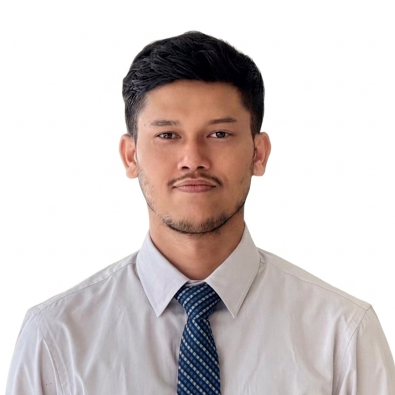

Aquaculture researcher
Nurul Habib
Lecturer in the Department of Aquaculture, Faculty of Fisheries and Marine Science, Sher-e-Bangla Agricultural University, Dhaka.

Research
Integrated mangrove–shrimp farming
Black tiger shrimp (Penaeus monodon) reared in mangrove-integrated and non-mangrove ponds. I compare water quality, survival, growth, feed conversion and yield, and look at hemocyte counts and hepatopancreas histology as health indicators. My master's work used stable isotopes (δ¹³C, δ¹⁵N) and trophic network analysis to trace what shrimp feed on in these systems.
Feed and shrimp health
Trials of probiotic-supplemented feed across four treatments over 120 days, with three replicates each, and what the treatments do to growth and tissue condition.
Microplastics and food safety
Microplastic contamination in farmed black tiger shrimp from Khulna, Satkhira and Bagerhat. Gut and muscle are analysed separately, polymers are confirmed by FTIR, and muscle concentrations feed an estimate of dietary exposure.
Current work
Occurrence, characteristics and food safety implications of microplastic contamination in farmed P. monodon
Coastal Bangladesh · Ministry of Science and Technology R&D
2026–27
Background
Experience
Lecturer, Sher-e-Bangla Agricultural University
Department of Aquaculture. I teach undergraduate students.
Dec 2023 to present
Research Fellow, Sustainable Coastal and Marine Fisheries Project
Department of Fisheries, Bangladesh
Jun to Nov 2023
Education
Master of Science in Aquaculture, Sher-e-Bangla Agricultural University
2024
Bachelor of Science in Fisheries (Hons.), Sher-e-Bangla Agricultural University
2022
Award
National Science and Technology (NST) Fellowship, 2023–24
2023
Teaching
Bachelor of Science in Fisheries (Hons.), Sher-e-Bangla Agricultural University
AQUA 152 Freshwater Aquaculture
Practical · Level 1
FISH 181 Integrated Aquaculture
Theory · Level 1
AQUA 202 Fish Nutrition
Practical · Level 2
AQUA 251 Fish Feed Technology and Management
Theory · Level 2
AQUA 252 Fish Feed Technology and Management
Practical · Level 2
AQUA 302 Coastal Aquaculture and Mariculture
Practical · Level 3
AQUA 303 Environmental Management for Aquaculture
Theory · Level 3
AQUA 451 Ornamental Fish Culture
Theory · Level 4
Publications
Rana, M. M., Newaz, A. W., Habib, N., Hassan, N., Faridullah, M., Talha, M. A., & Saeid, A. (2022). Effects of different drying methods on quality parameters of tilapia (Oreochromis niloticus) obtained from the local market of Bangladesh. Journal article
2022
Courses, training, workshops
Writing in the Sciences, Stanford Online
Oct 2026
Feeding the World, University of Pennsylvania
Sep 2026
University Teaching, The University of Hong Kong
Sep 2026
Pedagogy Training Programme on Innovations in Agriculture and Pesticide Management, SAU
Mar 2024
Virtual International Summer Program on marine tourism and coastal vulnerability, Universitas Padjadjaran
Aug 2021
The Basics and Introduction to GIS, GeoSRF, Dhaka
Aug 2021
Introduction to Algae, University of California San Diego
Aug 2020
Exploring Ocean, Explore the Planet Earth, Octophin, University of Chittagong
Aug 2020
The Sustainable Development Goals, University of Copenhagen
Jul 2020
BFRI Evolved Technology for Fisheries Development, Bangladesh Fisheries Research Institute, Mymensingh
Dec 2018